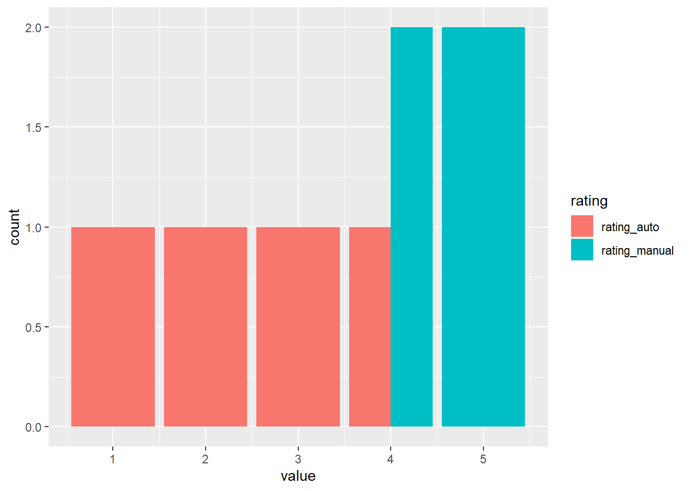

Recently I was asked to pull together an analysis comparing two sets of ratings. These ratings came in two flavors. The first was based on both qualitative and quantitative factors and ultimately was determined by a human. The second was based only on quantitative factors and was evaluated and assigned by a software program. The objective of the analysis was to determine whether ratings were more conservative when assigned by an individual relative to the automated rating.
I was tempted to use Excel to quickly run through the numbers. But, being that I’m currently working my way through R For Data Science (2e), I wanted to use tidyr and ggplot to get my hands dirty with a real life scenario. No hiding behind a simple point and click interface for me.
Getting Started
For the sake of this example, let’s say it’s the end of the year and these ratings are associated with employee reviews. The first, more manual rating, is assigned by an employee’s manager. The manager reviews both the work completed over the year as well as the employee’s attitude, teamwork, and professional development and assigns a rating on a scale of 1 to 5, with 5 being the best. The second rating is provided by software the company uses to track work. The program simply reviews the work submitted by the employee and generates a rating, again on a 1 to 5 scale.
Our example company has 4 employees. Their names and ratings are shown in the table below:
Employee
Rating (Manual)
Rating (Auto)
Ellie
5
3
Sam
4
1
Remmy
4
2
Brandy
5
4
The goal of this analysis is to determine if there is a conservative bias when assigning ratings manually. But, before we get to interpreting the data, we should pause and consider the optimal data visualization to use to demonstrate our findings.
Data-Viz-First Design
Given that we have a common categorical variable, our rating scale (1 to 5), and that we want to evaluate the number of observations in each category based on the method of rating, a Clustered Column chart will likely be the most straightforward tool for presenting the data. Ideally, we will want the rating scale to be displayed on the X-axis, the count of observations on the Y-axis, and we will want separate columns for each flavor of rating (manual or auto).
We certainly could use Excel to create this chart. And honestly, using Excel would be the easiest option. All we would need to do is highlight our data, go to the “Insert” tab on the ribbon, and in the Charts group, choose “Clustered Column Chart.” Tough to argue with the simplicity of that.
But, you never grow if you never push yourself outside of your comfort zone. So, let’s try and tackle this using R.
Data Transformation
First we need to consider the format of our data. Currently, we have a 4 x 3 table with two separate variables containing the data we would like to compare. We know that we need to somehow group the competing ratings together, but we don’t exactly know how to take two variables and turn them into one. This need leads us to the pivot_longer() function.
According to the vignette("pivot"), pivot_longer() increases the number of rows and decrease the number of columns in a dataset. By using pivot_longer(), we are able to re-purpose the individual rating columns in our table, condense them into a single column, and expand the number of rows to still retain the respective ratings.
To demonstrate this change visually, take a look at the tables below:
This is great! Now we have a single column for ratings and for values. This makes it much easier to map to the respective aesthetics of ggplot. Let’s give it a go.
Data Visualization
library(ggplot2)ggplot2::ggplot(df_longer, aes(x = value, fill = rating)) +geom_bar(position ="dodge")

It’s tough to draw a definitive conclusion from this chart but it appears that the rating assigned by the manager may be more favorable than the rating assigned by the software. Regardless, it was a fun exercise in thinking through the proper data format for those oh-so-often occurring Clustered Column charts in Excel.
Closing Thoughts
This was a fun opportunity to wrestle with both a data transformation and data visualization problem. For an R veteran, this would take no time at all. But for someone like me who is working more and more on developing my R skills, it was an interesting and real life opportunity to conduct some analysis and add some tools to the R tool belt along the way.